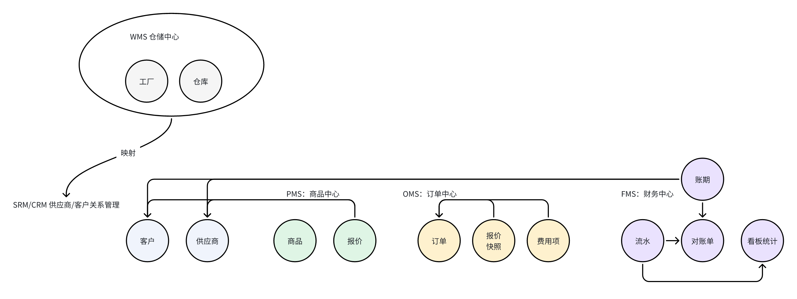

简单来说，本文会讲清楚我是如何使用DDD方法来进行供应链服务拆分的。
前言
本文尝试归纳整理作者前几个月负责的供应链项目中使用到的DDD战略设计方法，大概包含了以下部分：
- 理解问题
- 明确业务价值
- 分析业务需求
- 建立业务概念模型
- 识别限界上下文
- 业务边界
- 应用边界
- 领域建模
- 领域分析建模
- 领域设计建模
- 模型实现
- 微服务架构
- 应用集成、交互
其中架构层面，主要做了微服务拆分。
开始前简单对齐一下领域驱动设计的基本信息。
领域驱动设计简述
领域驱动设计，即DDD（Domain Driven Design）是一种软件设计方法，适用于复杂的业务建模场景。
简单概括DDD：通过领域建模的方式来落地软件设计过程以及结果。
那么如何进行领域建模？
我们可以拆解为两部分：
- 战略设计
- 划分限界上下文：根据业务功能和职责，将整个业务系统划分为不同的限界上下文，明确每个限界上下文的边界和职责。
- 确定上下文映射关系：分析不同限界上下文之间的关系，如共享内核、客户 - 供应商、遵奉者等关系，定义它们之间的交互方式和协作机制。
- 战术设计
- 识别领域对象：从业务需求和流程中识别出实体、值对象、聚合等领域对象，并确定它们的属性和行为。
- 设计领域模型：根据领域对象之间的关系，构建领域模型，包括实体之间的关联、聚合的组成、领域服务的定义等。
- 实现领域逻辑：通过编写代码来实现领域模型中的业务逻辑，包括实体的状态变化、领域服务的具体操作等，同时使用仓储来处理数据的持久化和查询。
本文我们聚焦于理解问题、识别限界上下文这两步。
工具、方法论只是辅助工程师去解决问题、输出方案，核心、本质还是要理解业务。所以我们先看看业务背景。
业务背景
我们团队核心能力：
- 为上层业务提供智能设备实物；
- 设备管理能力（B端以及C端使用设备的能力）；
- 售后交付服务；
24年之前，设备直接从供应商采购、交付，业务最简闭环流程：
24年开始，公司决定自研自营设备，业务最简闭环流程：
从图中可以看到，初期使用供应商现成的服务，生产制造、仓储对于平台是透明的。
业务开始自营后，供应链的预算、合同、采购、交付、仓储这些环节都需要自己负责，任何环节纯人工，成本巨大且低效。
同时，初期平台针对业务方侧已经建设了完善的销售、售后能力，24年亟需补充大后方的供应链能力。
从采买供应商服务到自营设备，团队职责与视角发生了巨大改变。
视角转变
职责上：增加了供应链的预算计划、生产采购、交付发货、仓储，每个环节都有巨大的效率提升空间。 视角上：自营供应链，需要自负盈亏、关注经营效率、品质。
业务上职责、视角变了，对应到系统上，关注的重点自然也就变了，规划与动作自然也得变。
职责变化
经过上面的梳理、分析，我们看看供应链ERP系统核心职责：
- 进（贝壳平台从供应商侧进货）
- 销（贝壳平台向上层业务方售卖设备、服务）
- 存（贝壳平台管理自研自营设备库存）（库存管理、供应链）
ERP业务核心是为贝壳IoT自研自营智能锁服务，将整个生产、进货、销售、售后、仓储流程数字化。 在之前采买供应商设备与服务的模式下，这些环节都是不需要我们负责的。
核心目标
经过上面的步步分析，我们明确一下供应链ERP的核心目标：
- 经营提效；
- 用更少的人、成本向上层提供服务
- 财务数字化：
- 快速算清账
- 系统化预算
- 系统化操盘
- 数字化沉淀业务规则；
- 流程运转
- 风控
ERP系统，核心是经营。领域名词都可以增加一个「经营」作为定语。 由于ERP业务处于客户视角的大后方，因此也可以增加「供应链」作为定语。
至此，我相信读者对业务背景心中有数了。
上面花了大量篇幅来说明业务背景，侧面说明业务背景其实是非常重要的。
磨刀不误砍柴工。
落地领域驱动战略设计
DDD的概念、学习成本、心智负担可以很大，也可以简化。我尝试简化了一版，对于战略设计，其实只需要三步：
- 建立统一语言；
- 分解问题域；
- 关联业务与系统；
落地的完整全景：
如何上手？我们继续逐步拆解。
理解业务问题
想要输出方案，首先第一步需要理解需求、问题。
我一般通过沟通的方式，从业务侧获取业务知识、信息。 沟通的时候，抓住几个关键要素即可：
- 人
- 事
- 资产
背后的本质就是：搞清楚谁负责什么事，什么是业务的核心指标。
这一步，可以使用用户故事、用例分析、四色建模等方式操作，也可以使用一些通用的战略分析的工具，比如5W1H、PEST、SWOT、价值链分析。
使用什么工具、方法我认为都是次要的，核心是要找对人找对信息的口子。
这点可以参考：迅速熟悉一摊子事：顺藤摸瓜
用例分析
经过与业务同学的沟通，我根据获得的信息，梳理了供应链运作的核心流程，如下：
梳理核心概念模型
根据上述的核心用例流程，其实已经可以梳理出核心的概念模型、领域实体：

划分上下文
有了概念模型，我们就可以划分领域、梳理领域间的协作关系，进一步产出限界上下文，同时根据语义相关性、功能相关性将关联性较强的归到同一个上下文。
统一语言
关于这里的核心域、支持域，我个人认为不是绝对的，比如下方的客户域、供应商域，在不同阶段不同角色来看，重要性是会变化的。
因此这种划分为核心域是合理的（没有这块业务无法运转），划分为支撑域也是合理的（相比交易结算来说，对业务的成败影响没那么大）。
根据子域初步划分限界上下文
核心的上下文就这几个：
梳理上下文协作关系
同样使用用例分析的方法，可以梳理评估一下上下文间的协作关系，进而产出中间层的上下文。
上下文本质表达的是业务的范围边界，同时也能作为技术上工程服务划分的重要依据。当中间层的职责变大、业务变重之后，就可以考虑将中间层上下文独立出去。
目前我们的供应链处于起步阶段，中间层业务并不复杂庞大，因此可以将中间层的业务维护在主上下文中。
明确核心领域模型
经过上面的逐步分析，终于可以把核心的领域模型给敲定了：
确定工程架构
经过上面的一系列过程，我们明确了核心的领域模型，并且划分了限界上下文。
到此，我们可以根据领域模型、上下文创建对应的代码工程了，结构如下：
这里部署只申请了两个工程资源，原因是目前还不清楚后续业务体量、复杂度会变得多大，因此暂时使用两个工程+子模块的方式进行代码工程架构拆分。同工程内的子模块间使用RPC子模块进行防腐交互，也为后续拆分预留了口子。
总结
本文主要使用文字+图例的方式介绍了我24年投入较多精力的供应链项目，包含了整体设计以及使用DDD 划分服务边界拆分服务的部分。
文中尽量屏蔽DDD 的复杂性，尽量让读者专注于业务的理解、整体的建模、拆分思路。
最后小结一下，使用DDD 方法论建模、拆分服务，我们经历了以下核心过程：
- 理解业务问题
- 划分上下文
- 明确核心领域模型
- 最后基于模型与上下文定义工程架构
其中最为重要的，我个人认为是要对业务背景理解透彻，要抓住一切能用的方式接收足够的业务信息。 其次才是使用工具、方法去解决问题。
以上，欢迎讨论。